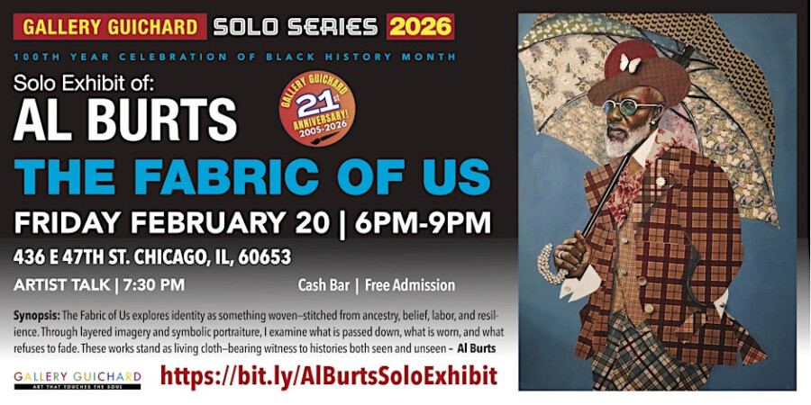

Al Burts: The Fabric of Us
The Fabric of Us, solo exhibition of Al Burt’s February 20, 2025 6 pm to 9 pm at Gallery Guichard!
Join us FEBRUARY 20, 2026 6 pm to 9 pm at GALLERY GUICHARD for The Fabric of Us featuring the solo show of East Coast of Al Burt’s.